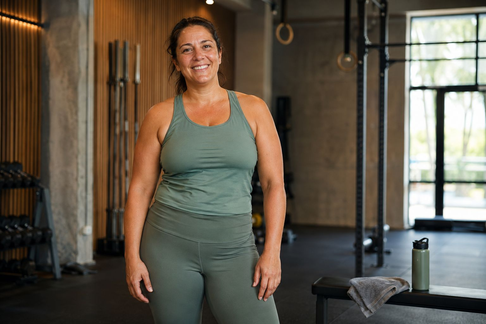
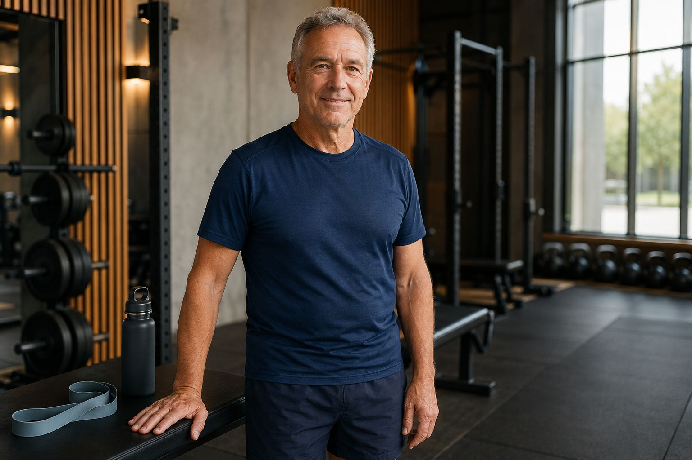
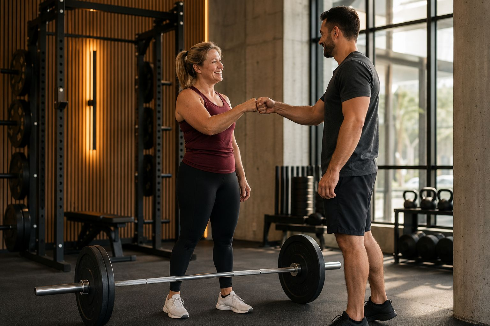

Case Story 01
Een traject met focus op ritme, technisch sterker bewegen en beter herstelgedrag.

Results
We tonen vooruitgang via realistische verhalen, duidelijke meetpunten en de context die nodig is om die vooruitgang te begrijpen.
Transformaties
Een traject met focus op ritme, technisch sterker bewegen en beter herstelgedrag.

Een tweede verhaal dat laat zien hoe consistent trainen merkbaar meer vertrouwen oplevert.

Een beeld dat de dagelijkse progressie en trots van leden goed samenvat.
Meten
Resultaten zijn niet alleen zichtbaar in een foto. Ook trainingconsistency, belastbaarheid en het gevoel van controle zijn relevante signalen in een traject.
Daarom houden we progressie in een eenvoudige, begrijpelijke vorm bij.